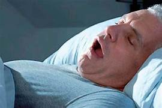

TRASTORNOS DE SUEÑO
Los trastornos del sueño son un grupo de afecciones que afectan la
capacidad de dormir bien regularmente. Ya sean causados por un problema
de salud o por demasiado estrés
Insomnio
El insomnio se refiere a la incapacidad de conciliar el sueño o permanecer
dormido. Puede ser causado por un cambio de horario, estrés y ansiedad
hormonas o problemas digestivos. También puede ser un síntoma de otra afección.
Apnea del sueño
La apnea del sueño se caracteriza por pausas en la respiración durante el sueño.
Esta es una afección médica grave que causa que el cuerpo tome menos oxígeno.
También puede hacer que te despiertes durante la noche

Síndrome de piernas inquietas
El síndrome de las piernas inquietas es una necesidad abrumadora de mover las piernas.
Esta necesidad algunas veces va acompañada por una sensación de hormigueo en las piernas.
Aunque estos síntomas pueden ocurrir durante el día, son más frecuentes durante la noche.
Narcolepsia
La narcolepsia se caracteriza por “ataques de sueño” que ocurren mientras estás despierto.
Esto significa que de repente te sentirás extremadamente cansado y te dormirás sin advertencia alguna
regreso